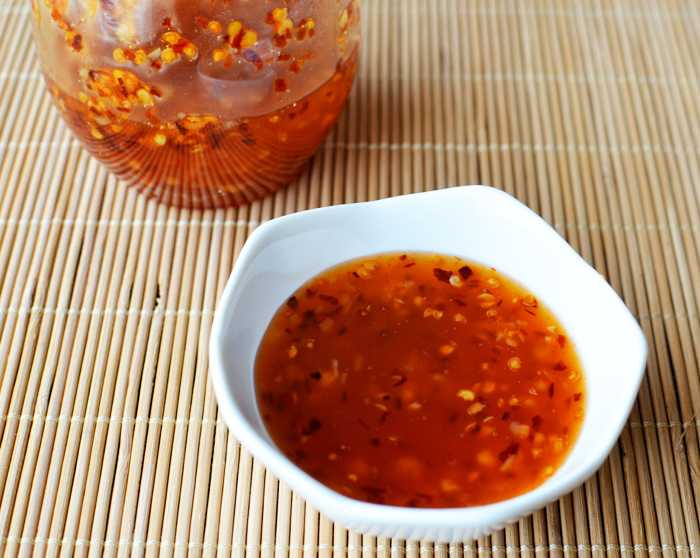

Spicy Sweet Chili Sauce

Description
Sweet chili sauce is a thick, sweet and spicy sauce with a garlicky
kick. You can see pieces of chili and minced garlic suspended in the
sauce. This sacue is a classic condiment in Asian cuisine, especially
Thai and Vietnamese cuisine.
Ingredients
- 1/2 C rice vinegar
- 3/4 C water
- 4 oz white sugar (1/2 C + 2 tbs)
- 5 garlic cloves
- 1 tbs soy sauce (or 1/2 tbs fish sauce)
- 1/2 tbs cayenne pepper
- 2.8 oz sambal oelek or a generous 2 1/2 tbs
- 4 tsp cornflour/cornstarch (or substitute arrowroot powder)
- 2 tbs water
Steps
- Add the vinegar, water, sugar, garlic cloves, soy sauce and
cayenne pepper into a nonstick pan.
- Heat over medium heat while stirring, to dissolve the sugar.
Increase the heat to medium-high and bring to a boil. Let simmer
approximately two minutes.
- Add the samgbal oelek and mix through. Let it cook for a few minutes
until its slightly thickened (2-5 mins).
- Mix the cornstarch and water into a smooth slurry and add this to
the sauce as well.
- While stirring frequently (to prevent from burning at the bottom),
simmer the sauce for a further 2 to 5 minutes or until it reaches
a desired thickness.
- Pour into glass jars with airtight lids (or heated and sterilized
lids to store longer).
- Cool to room temp and store in fridge.